有很多中成药都能治疗感冒，但不能抓到什么用什么。要仔细看看说明书，这个药到底是适用于风寒感冒，还是风热感冒。
调理方法选错，可能影响我们后半辈子的健康。对于孩子来说更是重要，不要让感冒影响到孩子的成长。感冒调理好，不留后遗症，就是给孩子一生的健康打下一个好的基础。对付感冒，首先要分清寒热，这个绝不能错，否则会南辕北辙。
读者评论
- 孩子前年、去年的前半年总是感冒吃药，也不管风寒风热就给一堆药。后来根据老师的方法加以辨别，对应使用一些简单的食方，今年春天体重和身高都长了。
——14群读者
- 有了孩子后，小孩经常感冒发烧，我也没有经验，每次都去医院开各种药吃，后来就对药物过敏了。机缘巧合下，又看到了陈老师的书，果断下手，真是买了一本又一本，看了书后受益颇多。我经常用的是感冒方面的小茶方，孩子大多是被传染的，每次都仔细辨证是寒、是热还是积食，对症之后效果真的很明显。告别各种感冒药，通过食疗效果更好，不易反复！
——小渔饵
- 我每次得了感冒都是用老师的方子应急，现在吃药越来越少了。
——丽娟
- 上个月感冒，扁桃体发炎，挂水三天，吃药三天，炎症始终未消除，一直有痛感。大概二十天左右，无意中看到老师的文章，用鱼腥草煮水喝了三天，炎症没了，感冒好了，太神奇了，
——喜沁207
分辨风寒感冒的小窍门
一、看嗓子。嗓子不疼，只是发痒或没感觉，一般是风寒感冒。
案例：读者经验
昨天下午在办公室头有点疼，感到发冷，还打喷嚏，感觉要感冒了。下班回家后赶紧翻看了老师的书，对症是风寒感冒，立马煮了去皮姜汤。睡觉前又煮了葱姜陈皮水，喝了一碗，全身立马热乎乎的。今天早起竟然好了，感冒的症状都没了，太神奇了！
——4群读者
二、看分泌物。痰或鼻涕白色清稀。
案例：读者经验
昨晚有点凉，孩子半夜踢被子，早上起来有点清鼻涕，没有其他症状。我只煮了点葱白水让他趁热喝了，午觉起来一点事也没有，好了。老师的方子只要及时用对，效果没的说。
——期待
三、看体温。发热（发烧）慢，温度不高。
案例：读者经验
昨天中午女儿放学回家，说头晕，脸上发烫，怕冷，体温38.6℃，就给她煮了葱姜陈皮水喝，然后用姜煮水泡脚。泡完脚隔了大概20分钟，体温降到37.4℃了，到晚饭后就是37.1℃了。今天早上起来正常，太开心了。简单的食材搭配起来这么神奇有效。
——读者朋友
多数情况下，感冒都是从风寒感冒开始的，风热感冒很多也是从风寒感冒转化的。很多人吃错感冒药往往是在风寒感冒初起时，用了治风热感冒的药。一开始错了，以后调理就难了。
感冒生病了，怎么办？打针、吃药、输液？我们的思维已经固化了。直到今年6月4日，我家小孩着凉夜里发烧，用正宗的川陈皮，加葱须、葱白、姜煮水喝，硬是把39℃的体温给降下来了，只用了4小时。因为有经常性支气管肺炎，早上还是去了医院，查血项是炎症引起的，医生说不住院还会发烧。我们就按照书里的方子继续调理，再没发烧，病情也没有再恶化了。面对孩子，我们第一次对权威有了怀疑的胆量。
——22群读者
风寒感冒：低热（低烧）、怕冷、不出汗、头痛、鼻塞，
喝姜葱陈皮水（感冒通鼻饮）
姜葱陈皮水
【原料】
葱白连须3根、生姜3片、川陈皮1个、红糖适量。
【做法】
- 把葱的葱白部分连同下面的根须一起，用加面粉的清水泡洗10分钟。用手抓住葱白，把根须的部分在水盆中顺时针转动几次，再逆时针转动，这样可以把根须上的泥沙冲洗干净。洗干净后可以立即使用，也可以晒干保存。
- 川陈皮用清水泡软。生姜去皮，削成片。
- 把葱白连须、姜片、川陈皮、红糖一起放入随身杯中，用沸水冲泡，闷10分钟后，一次喝完。有条件煮一下更好。
- 饮用后会微微出汗，注意避风防寒。
【功效】
- 调理风寒感冒（怕冷、头痛、无汗、鼻塞、流清鼻涕）。
- 祛风寒，通鼻塞。
- 趁热喝。如果能吃得下去，把葱白和葱须一起吃掉，效果更好。
- 平时有胃热的人，不要把姜片吃掉，以免上火。陈皮的味道有点微微的苦和辛辣，可以吃也可以不吃。
- 喝了葱姜陈皮水，记住这时候一定不能受风，否则寒气又会进入身体。
- 风寒感冒调理的重点是让人出汗，所以葱姜陈皮水只要喝一两次，最多三次，出了汗，散了寒，感觉好转就可以了。
- 我是寒湿体质，每次感冒都是风寒，流鼻涕，打喷嚏，鼻子不通，身体感觉冷，浑身难受，头疼，但只要一喝这个感冒通鼻饮，最多两次就好了，效果棒棒哒。
——简单
- 感冒通鼻饮特别管用，我家孙子快6周岁了，从来没打过针，这个用得最多。
——转
- 儿子受凉发起了低烧，体温37.5℃，我马上煮了姜葱陈皮水，第一次喝完降了1℃，3个小时后又升到了38.5℃；我又煮了一次给他喝，在这期间多给他喝水，2个小时后降回37.2℃。然后泡脚睡觉，第二天早上起床后就可以去上学了。感恩陈老师，让我的小孩避免了退烧药对身体的伤害。
——美
- 偶尔在电视上看到老师讲风寒感冒的食疗方——感冒通鼻饮（葱姜陈皮水），已经六七年了，我和孩子都很受用。孩子大学宿舍都备着我晒好的葱白连须和晒干的橘皮，身边的朋友都说我这是神水。
——晴天
- 这款调理风寒感冒的通鼻饮，喝了效果杠杠的。之前感冒了，喝了马上见效。
——玫瑰
- 我用的最见效的方子就是葱姜陈皮水。风寒感冒初起时，只要晚上喝了葱姜陈皮水，立马见效，第二天马上就精神了。然后配合着鱼腥草、甘草梅子汤、罗汉果、牛蒡等把后遗症也给清理了。冬天的那次流感好多人连续咳嗽了很长时间，但是我最多三天，爽爽利利地好了。
——岩
- 生姜葱白带须陈皮煮水治风寒感冒特好使。只要是鼻塞或流清鼻涕，或喉咙痒，身体感觉有点怕冷的症状，就用这个方法，管用。
——一抹微笑
- 这个茶方很灵，昨晚女儿说头痛，鼻塞，还时不时地打喷嚏，舌苔有点白，看样子是受了风寒。我立马找到允斌老师的茶方，对照书中所说的方法去做，在厨房找到葱白、生姜、陈皮、红糖，煮了一碗热乎乎的汤水，给女儿喝下，真希望不要半夜发烧。结果一夜睡到天亮，我女儿早上起来说头不疼了，鼻子还有点塞，我又煮了一碗给她喝下，她就去上学了。下午回来看样子是没事了。
——彭玲
- 葱姜陈皮水效果超级棒，基本上每次指导家人和同事都一次成功。日常用的小方子基本都是药到病除。
——叶子
- 那天我在医院待了一天，第二天早上突然就打喷嚏、流鼻涕，鼻头很痒，感觉像是病毒性感冒。早上出门比较着急，就在保温杯里泡点葱姜红糖水。后来一直没怎么出汗，下午就感觉严重起来了。晚上回家又煮了葱姜陈皮水，喝完就睡觉，感觉身体一阵一阵地潮热，之后微微出点汗。隔天早上起来只打了三个喷嚏，不流鼻涕了，感觉已经好了百分之八十了。再过一天就完全好了。
——茉茉
- 女儿初三，这两天感冒发烧，照着老师的方子——葱姜陈皮水，喝了两次就退烧了，太感谢了！
——英子
- 昨天就流鼻涕了，今早买了葱、陈皮，姜去皮，一起煮了一大碗水，趁热喝下，马上就出汗了，轻松点了。
——大宇小俊妈
- 在这个寒暖交替、忽冷忽热的季节，稍不留神，就会被邪风伤到。这不鼻子堵了，还喷嚏不断，浑身冷。好在有陈皮葱姜水，总能在我感冒时，助我祛邪还我健康。老师的小妙方，简单却很实用！
——法图麦&杨
- 我前天下午吹了点寒风，当时觉着后背发冷也没当回事，昨天早上喝了生姜红糖水也不见好，到晚上就觉着浑身没劲，腿有些酸疼。今早生姜、葱白连须、陈皮、红糖煮水喝了一碗，觉着微微出汗浑身热乎，接着葱白连须也吃了，今天感冒的症状就没有了，鼻塞也好了。感谢老师的感冒小药方。主要是用对，一定要放陈皮，不然效果不会这么好，亲身体会！
——13群读者
- 大宝前两天鼻塞很严重，流涕，咳嗽，我就用老师教的陈皮葱姜煮水，让她喝了一次，放学回来就好了。然后她开心地说，妈妈明天再喝一次吧。以前是逼着她喝的，现在很自然地都接受了。
——3群读者
- 对于我而言，最神奇的还是葱姜陈皮水。之前出差喝凉啤酒、吹空调凉着了，去超市花了8块钱买葱、姜，煮水喝，我和同事没有吃一粒药就全好了。
——22群读者
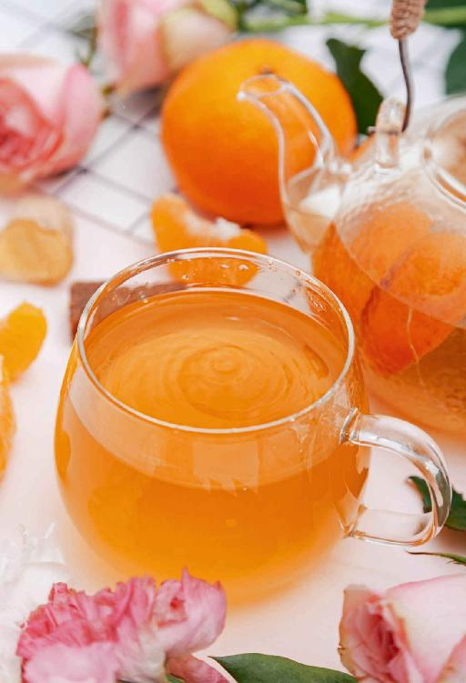
分辨风热感冒的小窍门
一、看嗓子。嗓子疼，一般是风热感冒。
风热感冒初起，往往最先感觉到的就是嗓子疼。所以一旦觉得嗓子有点疼，马上用食疗祛风热（手边有什么就用什么），就能及时防止感冒发展。
案例：读者经验
前天晚上感觉头有点晕，像是要感冒了。第二天起来果然喉咙有点不舒服，我每次感冒就是先喉咙痛。想起老师说的风热感冒可以用牛蒡茶，我拿了半包泡水，昨天喝一次，今天早上再喝一次。现在喉咙没啥感觉了。
——12群读者
昨天我老爸老妈都喉咙痛，身子有些乏，应该是风热感冒初起征兆。上午给他们泡了蜂蜜绿茶喝了，下午又给他们煮了荠菜水喝，今天全都好了，效果太赞了！
——桑小陌
昨晚洗澡受凉了，今早起来嗓子疼，赶紧煮了荠菜水喝下去，2个小时后症状慢慢消失。又煮了鱼腥草水巩固一下，把感冒的苗头扼杀在摇篮里了。真是见证奇迹的时刻。
——碧水蓝天
二、看分泌物。如果有痰或者鼻涕，黄色、浓稠的，属于风热感冒。
案例：读者经验
我感觉热伤风好几个月，平时不流鼻涕，到早上起来有黄鼻涕、黄痰，鱼腥草喝了一周，又跟老公喝罗汉果、鱼腥草、牛蒡，现在黄鼻涕淡了，嗓子黄痰也少了。
——xiaona
三、看体温。风热感冒一开始就容易发热（发烧），而且温度比较高。
案例：读者经验
女儿大前天风热感冒，前天单位里吹空调又着凉了，回到家发烧38.5℃。去医院检查白细胞超高，医生给开了头孢等抗生素，因感觉孩子已在退烧，就没取药回家，煮了鱼腥草茶给她喝。昨天早上醒来人舒服多了，烧也退了。
——彩虹
昨天女儿来电话说高烧39℃，没有别的明显症状。我丫头平时回家也挺喜欢看老师的书，于是她去买了干品鱼腥草煮水喝了睡觉，今天老师说已经没事了（一个在校寄宿的高中生）。
——8群读者
- 感冒是会转化的。风寒感冒到后期有些就会转化为风热感冒。如果感冒调理了两三天没有完全好，还继续用同一个方法，那就可能是不对的。
- 感冒，往往容易在气温高的时候从风寒转为风热。对于年轻人和小孩来说，体内的阳气足，也很容易从风寒感冒转化为风热感冒，所以我们要随时观察自己身体的表现，根据感冒的发展状况及时调整方法。
案例：读者经验
夏天炎热，宝贝容易得风热感冒。自从看了陈老师的书，每次都是喝鱼腥草水，没吃过感冒药，不用担心副作用，效果非常神奇。
——蔡大
读者评论
最近由于换季，身边感冒咳嗽者很多，我和二宝也不慎着了道。从流涕开始，我用葱、姜、陈皮，加鱼腥草煮水喝，成功地控制住了。但是几天后开始咽喉不爽，女儿也开始咳嗽，我就煮了罗汉果、柿蒂和牛蒡茶，慢慢地什么时候好了都不晓得！对症就是这么见效！
——6群读者
一开始是风寒症状，几天后转为风热症状，这位读者根据感冒的转化及时调整食疗方法，对症调理，效果就很好。
有的人风热感冒后，容易并发扁桃体炎症，咽喉肿痛。为了预防，可以提前喝牛蒡茶。
中医用牛蒡的种子入药，叫牛蒡子，用来治疗咽喉肿痛。牛蒡也有这个功效。扁桃体发炎红肿时，可以把新鲜的牛蒡洗刷干净，榨汁来喝，可以消肿。
牛蒡茶
【做法】
- 用沸水冲泡牛蒡茶，闷10分钟后饮用，有条件煮水更佳。
- 可以反复冲泡几次，然后将牛蒡吃掉。
- 如果没有榨汁机，牛蒡直接吃也是可以的。
- 生牛蒡消肿的作用更强。牛蒡炖熟后，它消肿的效果就减弱了，适合用来润肠、通便、排毒及日常保健。
- 我做过扁桃体切除手术，但术后那个地方还经常疼，西药、中药都没少喝，有医生还让我再做一次手术。幸好我遇到了陈老师，买了老师的好几本书，看后觉得鱼腥草茶和牛蒡茶很适合我，我嗓子疼喝两天就好了，到现在已经两年多了没有再去看医生、拿药，真是太感谢陈老师了！
——喜气洋洋
- 感冒后喉咙痛，扁桃体发炎，声音嘶哑。喝了牛蒡茶，第二天好很多，第三天基本全好了！以前肯定要吃抗生素！
——雪儿
- 这个牛蒡茶真有效，这几天嗓子不舒服，说话说到一半声音就出不来了，刚喝几口竟然可以说完一整句话了，陈老师太厉害了！
——9群读者
- 前一阵感冒好了后，嗓子却一直没有好，扁桃体发炎，咽喉肿痛得咽口水都困难。按照老师的方子买了一根牛蒡，自制牛蒡茶，连续喝了两天，扁桃体消炎了，喉咙也完全不疼了，连感冒头昏昏沉沉都好了，脸上的水肿也消退了，不敢相信！
——王翠
- 牛蒡和罗汉果对我儿子特别好使，风热感冒、咳嗽黄痰都是用这个方子搞定。
——Jenn
- 昨天嗓子发炎，喉咙疼，声音哑了，喝了陈老师的牛蒡汁，今天好了！
——田亮
- 我冬天喝补心养阳汤后第二天喉咙痛得不行，然后看留言说是外感，要吃牛蒡。喝了一杯浓浓的牛蒡茶，到晚上睡觉时就不疼了。
——木兰花
- 我家小外孙昨天嗓子疼得一直哭，扁桃体红肿溃疡。今天早上我用了一根牛蒡榨汁，一上午喝了一杯，就是一会儿喝一点，睡醒午觉后再看，嗓子一点都不红了。太神奇了，什么药都没吃。
——孙惠敏
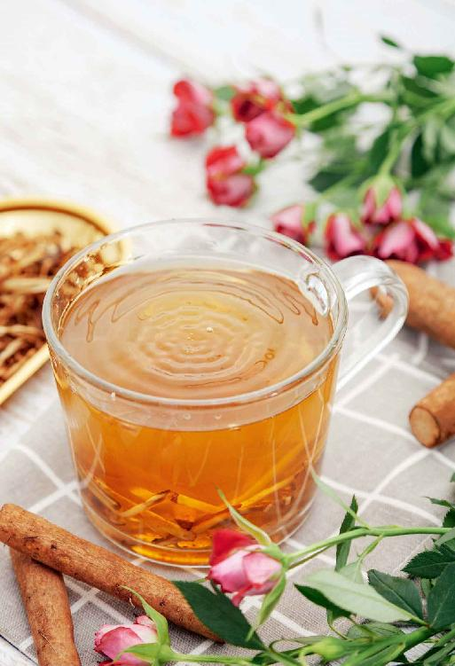
受凉加吃生冷引起肠胃感冒，恶心、呕吐、拉肚子，喝芫香正气水
当我们吹空调受了点凉，或是淋了雨，同时又吃了生冷瓜果或是难消化的食物，就有可能得肠胃型感冒。肠胃型感冒常用的中成药是藿香正气水，但药味比较辛烈，很多人特别是小孩喝不下去。这款茶饮具有类似的作用，对于轻度肠胃型感冒有效。
芫香正气水
【原料】
香菜（芫荽）3〜5棵、带皮生姜3片、川陈皮或鲜红橘皮1个。
【做法】
- 香菜用加面粉的清水泡10分钟，洗干净，连根一起切碎。生姜不去皮，切下3大片。陈皮切成丝。
- 一起放进杯子，冲入沸水，闷5分钟后饮用，有条件煮水更佳。
【功效】
- 防治肠胃型感冒（感冒后恶心呕吐，或拉肚子）。
- 散寒暖胃，帮助肠胃排毒。
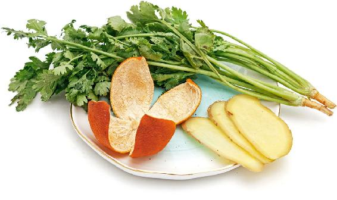
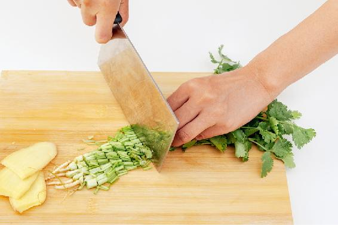
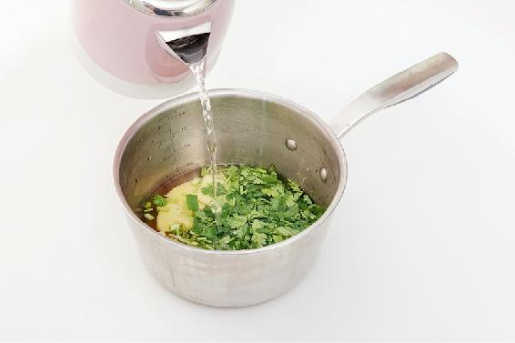
- 我感觉芫香正气水比藿香正气水的疗效还快，治好了我家小外甥女及爸爸、妈妈的肠胃感冒。妈妈是每天吃完饭后胃胀气，很难受，吃了好多胃药都不见效。正好爸爸吃得太油腻了，肠胃感冒呕吐，告诉他这个方子，妈妈也跟着喝，把胃胀的毛病给治好了。很感谢陈老师。
——雪天
- 香菜陈皮生姜止吐方非常有效。我试过，很好用、见效快，还无不良反应。
——梧桐
- 最推荐芫香正气水。孩子才十一个月时拉肚子，医生开了药，吃了也是反反复复，还让我换了防过敏奶粉。那时还没用过老师的这个方子，想到反正老师的方子都是食疗的，没不良反应，就煮了点给孩子喝，没想到吃后过了2小时，孩子哗啦啦地拉完就全好了。太感谢了！后来再有什么问题都是先看老师的《茶包小偏方，喝出大健康》和《回家吃饭的智慧》。
——Fenny
- 胃肠感冒，用陈皮、生姜、香菜煮水喝，自己亲身体验了一次，真见效！按老师的茶方煮水，喝下去胃里就暖暖的，也不胀了。
——四月天
- 我儿子一到夏天就会有肚子疼的毛病，喝完这个过一会儿就好。
——森林里的猪
- 这几天肠胃型感冒，拉肚子。昨天看到香菜陈皮姜水的方子，晚上立刻煮了喝，就没拉了。今天早上又煮了一次喝，走动后有微微发汗的感觉，感觉人很轻松。
——丹子
- 昨天孩子发烧喝了退烧药，到中午又烧了。孩子因为发烧而且肠胃不舒服不想吃饭，下午熬了陈皮生姜香菜水喝了，没多大会儿就退烧了，药也没吃，出了一身汗，好了。真的要感谢陈老师。
——婷
- 儿子因积食引起呕吐，发烧39.2℃。给他煮了香菜陈皮姜水，用半支藿香正气水给他喝了，半支滴肚脐。烧退了，不过不想吃东西。然后又根据家人建议喝了炒山楂水一天，开始喝粥了。
——河南~阳光味道
- 昨天吃了韭菜鸡蛋馅的速冻饺子，一根香蕉，然后就午睡了，没有盖好肚子。起来就觉得不舒服，恶心想吐。因为自己孕初期，本来就有点恶心，到了吃晚饭的时候，还是没忍住吐了。煮的香菜陈皮姜水，喝了一碗，还恶心，也没吃香菜。躺了一两个小时，终于排了好多气，不难受了。
——玉玲
- 昨晚发高烧去看医生，验血结果是病毒感染。吃了药，但没输液。今早不烧了，但还想吐。后来得知这是肠胃型感冒，煮了香菜陈皮姜水，喝了以后舒服多了，到现在没有再想吐，打算迟点再喝一次。
——53群读者
- 孩子前天回家说不舒服，一会儿就吐了。我看他舌苔中间有点白，两侧有红点，早上起来还有点打喷嚏，感觉有内热。昨天给宝贝喝的香菜水，从早上到中午，食欲一直不好，我也没有强迫他吃。坚持喝了两次香菜水，吃了一个火烧红橘，晚上看着有了食欲，吃了一碗大米粥，还吃了一点花卷，又开始活蹦乱跳了。今天已经把他送到学校了。鲜鱼腥草根的味道有点大，但是宝贝能坚持喝，这次愣是没吃一粒药就挺了过来。感谢陈老师的良方，感谢会长和班长的分析指导！
——10群读者
- 前段时间老公表妹家一岁多宝宝，因吃生冷水果多了些，半夜开始上吐下泻，吃药几天都不见好，于是给我打电话求救。我问清楚原因后，随即让她出去买了陈皮、鲜姜、香菜熬水给宝宝喝。没想到第二天下午她就高兴地告诉我，宝宝自从喝了熬的香菜陈皮汤再没拉肚子，人也精神了，还告诉我她自己也不舒服，总恶心，就与宝宝一起喝了汤水，没想到喝完肚子就舒服了，也不恶心啦！高兴地说以后要好好跟我学养生。
——瑞莲
神奇的天然退热（退烧）茶秘方（感冒引起的高热）：蚕沙竹茹陈皮水
我家的这个秘方其实很简单，只有三味材料，许多读者用后都感叹它的神奇。注意要用道地的川陈皮效果才好。
蚕沙竹茹陈皮水
【原料】
蚕沙、竹茹、川陈皮各30克（幼儿减为10克）。
【做法】
- 把川陈皮洗净，和蚕沙、竹茹一起放入锅中，加冷水煮，水不要太多，以免一次喝不完。
- 水开以后再煮3分钟。
- 一次喝完。
【功效】
退热（退烧），祛湿浊，化痰，止呕。
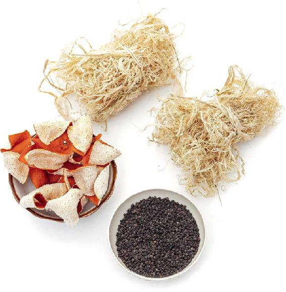
【适用人群】
感冒引起的高热（高烧）、脾胃不和、食欲不振、恶心呕吐者；经常皮肤发红瘙痒者。
感冒高热（高烧）时（成年人发热超过38.5℃，儿童超过39℃）饮用，饮后睡上一夜，耐心等待退热（退烧）。严重者可以喝2～3剂，退热（退烧）以后就不用再喝了。
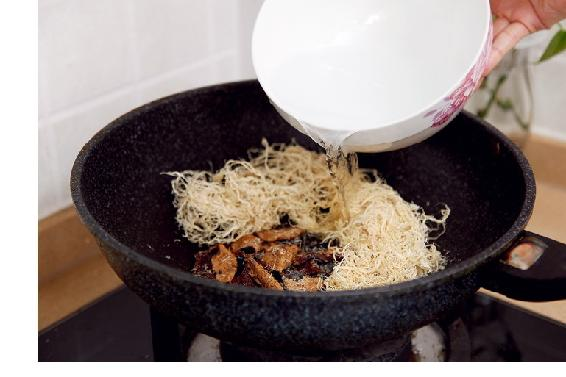
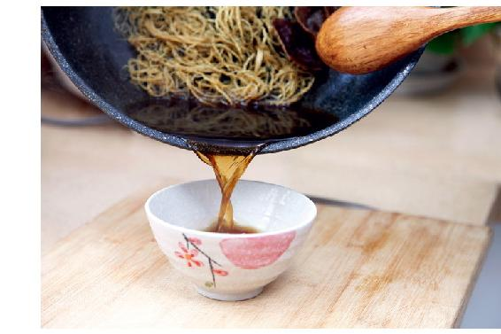
允斌点评
- 这个方子中的几味药都相当安全，小孩、老人都可以放心地使用。太小的婴儿，一次喝不了太多汤药，最好少放点水，煮得浓一些。每3个小时喝一次，至热退为止。
- 重要提醒：如果感冒未发高热，只是低热，此时不要急于退热，要按风寒、风热辨证食疗。只有发高热，说明病已深入脾胃，不是单纯的外感了，才能用这个方子。
读者评论
- 蚕沙竹茹陈皮退烧方特别好。妹妹抱着十个月的女儿过来让我帮她带一天，她刚走我就发现孩子发烧了。我在发烧，正好我煮了陈皮退烧茶准备吃。她也烧到快39℃了，就给她喂了几口，过一个小时又喂几口。2个小时过去，已经38℃了。又喂几口，就哄睡了。下午睡醒后我们两个人烧都退了。真是好茶方。
——姐彤
- 有一次我家二孙子还不到六个月的时候，晚上发高烧40℃，我就煮了感冒退烧茶给她喝。因为孩子小，我就一次少喂一点，煮得很浓，孩子喝了以后体温慢慢往下降。到了早晨，体温已是38℃。她妈妈不放心想去医院看，到医院给拿了点药，回到家我不让吃，我说温度没升，再让孩子喝点这个水，又喝了几次烧退了，拿的药也没吃就好了。
——转
- 我家小孩体质不是很好，天气忽冷忽热时经常会感冒发烧，所以我经常会用这个方子给他调理。有一次，我家小孩半夜三更发起高烧，我在家从药箱里找到了陈允斌老师推介的这款竹茹、陈皮、蚕沙各20克，用来煲水。把药水分两次给小孩子喝，第一次喝药是在晚上11点多，喝药后1个小时，小孩子的头没有那么烫了。3小时后再喝第二次药，等到第二天小孩子已经退烧了。
——一路上有你
- 蚕沙竹茹川陈皮退烧方不像西药退烧那么快，但很温和，反复发高烧的孩子用这些材料各10克煮水，喝个一两次就好了。
——简单
- 我家小孩高烧时，用感冒退烧茶喝第一次烧没退，第二次喝烧才开始慢慢往下降。起初还纳闷怎么没效果，后来才知道原来是陈皮的原因，我用的不是正宗入药用的川陈皮，而是一般的橘子皮，所以效果不佳。
——神珠
- 蚕沙竹茹陈皮水这个方子特别管用。我老妈有一次感冒，她虽然70多岁了，体质一直很好。我一摸她的头特别烫，我立马给她测体温，39℃，吓了我一跳。我想10点多了去医院不方便，还是先用一下蚕沙竹茹陈皮水，喝了以后我就守在妈妈身边，过了一会儿测温度，又升到40℃。我非常害怕，开始做好去医院的准备。顺便又让妈妈喝了一碗，结果后来温度慢慢地下降了。一直到凌晨3点，温度降到了36.8℃，我的心才放到肚子里。让妈赶紧又喝了一次，到6点体温终于正常了。
——美好
- 我儿子发烧，体温升到39.8℃，我到药店买来蚕沙、竹茹，陈皮用的是按照老师的方法自己晒的川陈皮，只喝了一剂，体温就恢复正常了。再次验证了小茶方的神奇。
——燕子呢喃
- 让我印象最深刻的茶方是蚕沙竹茹陈皮水，老公感冒发烧38.5℃，喝了一次就退烧了，而且后期也没有吃任何药，真是太神奇了。
——珊瑚石
- 老师所有的书我都买了且爱不释手。自从买了老师的书，我家人感冒发烧都是按老师的茶方处理，效果杠杠滴！尤其是蚕沙竹茹陈皮退烧方，效果很好，而且向身边亲友推荐，用了都说好，有好多人也成了老师的铁粉。
——杨爱莲
- 退烧方法（蚕沙、竹茹、陈皮）特别好，我儿子从两岁半起就用，喝一次就退烧。
——森林里的猪
- 只要不是炎症发烧，喝一次退烧茶就管用，里面的三样材料最好选用道地的材料，喝起来就不怎么苦。煮的时间严格按照书中介绍的时间，使用效果才会发挥得好。
——高高
- 快3周岁的女儿每次生病，夜里都会尿床。昨天积食发烧到40℃，喝了老师的退烧方五次（退烧方要煮20分钟），到今天中午好得差不多了。昨天夜里我忘了给宝宝穿纸尿裤，加上又喝了很多水，没想到宝宝都能自己起床尿尿，而且是起床三次；换成以前，早就控制不住尿出来了。
——27群读者
- 陈老师的方子很神奇，比吃药还管用！去年流感时期，女儿发高烧39.5℃，去药店买了蚕沙、竹茹、陈皮，煮水喝。第一次煮时放的水有点多，就分两次给她喝，喝了之后，烧退了一点点，这时家里人很着急，让去医院看看。我淡定地说：“没事儿，发烧是一种自我保护。”说句心里话，我也很害怕，因为第一次用，还有就是担心药的质量不过关。临睡觉的时候还是39℃，那一夜我都没怎么睡，时不时地摸摸孩子的额头。大约凌晨5点多，烧退了。很高兴，以前吃西药总是反复地发烧。
——菩爱纯真
- 我小表弟昨天下午开始发烧，到今天都没好，我哥哥和奶奶都用他们自己的方法给小表弟退烧，但一点用都没有。然后他们离开家后，我就去药店按陈老师的退烧茶方买了药材煮给小表弟喝，喝了两次，小表弟终于退烧了，又露出了可爱的笑容。
——『Z』健辉
- 昨天单位里一个朋友的小孩发高烧，我告诉她让孩子喝蚕沙竹茹陈皮水，今天告诉我已经退烧了。我又让她煮了点米汤给小孩子吃，因为发烧会伤到脾胃，会胃口不好，她说太神奇了，小孩活蹦乱跳的了，她开心地在那儿大笑。感恩老师的无私奉献，让小孩子免受医院折腾。我也好开心可以帮助别人。
——萍萍
- 我儿子以前每次发烧都去打针，给身体带来了很大的副作用，后来在《百科全说》里看到了陈允斌老师讲的退烧方法。有次儿子又发烧到40℃，喝了两天就完完全全好了。
——持戒
- 14︰30接到电话让我回家，孩子发烧严重。我17︰00到家，当时孩子没有哭闹，只是没有平时活跃，一身滚烫，量体温39.8℃。我立马飞奔到药店，结果附近好几家药店都买不到“蚕沙”。四处电话求助，绝望到差一点打车到市区，后来终于问到一家药店有药！18︰30拿着药到家，孩子开始哭得撕心裂肺的，没有量体温，但肯定烧得更厉害了，怎么都哄不好。10分钟后药熬好了，孩子尝了一口就再也不喝了，我们两个人强行给他灌下去，半小时后竟然听着音乐会跳起舞了。1小时后体温降到37.8℃，再1小时后36.2℃，一会儿就睡着了。
——mymmzhp
- 这款蚕沙竹茹陈皮水真的是非常好，给老人用了，退烧效果好，退烧了人还不难受，好得很快。
——藏香
- 上次发烧喝了蚕沙竹茹水没效果是因为药材不好。我家宝宝前天晚上突然发烧39.7℃，一晚上按摩都没效。我这次买了精品的蚕沙和竹茹，昨晚又烧起来了，我就煮了一大碗，她只肯喝五口，结果喝完5分钟就开始退烧了。早上也拉了便便。
——24群笨笨
- 发烧、积奶加外感所致，舌头有些发白，我煮了些姜汤葱须水喝，上午找人排排奶，排完奶烧到38.9℃，头疼欲裂，喝了小柴胡，泡脚，睡觉，醒来还是没退，烧晕了。小柴胡是退低烧的，赶紧煮上蚕沙竹茹陈皮水，喝了一大碗，1个小时后温度38.6℃，头疼好了一些。吃完饭温度又降了些，又喝些蚕沙竹茹水，泡脚，睡觉，第二天烧全退了，体验了一回蚕沙竹茹水的神奇。
——21群读者
- 近几日嗓子疼，咽东西费劲。我怕影响宝宝，想快点好，就服用了几天的消炎药和退烧药，结果根本无效，温度在不断上升，没办法去了省医院。医生说我是上呼吸道感染，开了退烧药和消炎药，这时已经烧到了39℃，走路都晃。回家后看着药就不想吃，这时想到陈老师的退烧方，于是跑了几家店买了药回家就煮上喝了，一觉醒来退烧了，太神奇了。
——27群读者
- 自从用了蚕沙竹茹陈皮水退烧，再没用过西药。
——丑丑
- 我儿子小肠下垂做手术后感染了，一个星期都40℃高烧不退。医生每天打消炎针，但是都不退，我就想起陈老师的退烧药方，陈皮1个，竹茹跟蚕沙各30克。吃了就退了。每每回想起孩子当时的情况，还会掉眼泪。
——29群读者
竹茹陈皮水
【原料】
竹茹10克、川陈皮10克。
【做法】
把川陈皮掰成小碎片，和竹茹一起煮水，闷10〜20分钟后饮用。
【功效】
- 调理感冒初愈后痰多发黄、食欲不佳、睡眠不宁。
- 清热化痰。
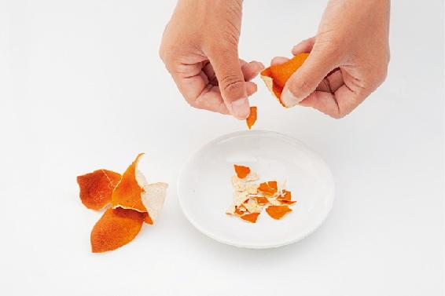
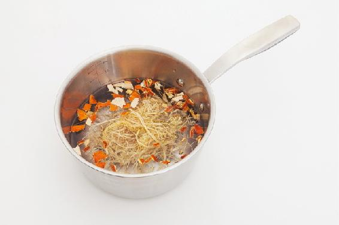
读者评论
- 竹茹陈皮水祛黄痰的效果非常棒，我和孩子都是阴虚体质，只要有痰或痰黏在喉咙上咳不出来，就加点冰糖煮15〜20分钟，喝一天就没事了，屡试不爽。
——心怡
- 去年我妈吃不进东西，吃了也会呕出来，后来想到老师教的这个茶，陈皮和竹茹都可以止呕，她喝过就好了。很多时候都是老师的食方帮了她！
——倪广轩
- 前天晚上牙龈酸胀，睡不着，估计上火了。我马上煮竹茹陈皮白茶喝，安心睡了一觉，早上起来完全好了。
——琪智
感冒后咳嗽、痰白（风寒咳嗽），喝陈皮姜茶
如果感冒后咳嗽，吐的痰是白的，那就是风寒咳嗽，可以用陈皮加姜煮水喝，陈皮能化痰、散寒。如果在外不方便用鲜姜，就用小黄姜干品和陈皮一起泡茶。
陈皮姜茶
【原料】
3个川陈皮、9片小黄姜（小片）。
【做法】
将陈皮掰碎，和小黄姜一起加沸水冲泡，闷10〜20分钟后饮用。有条件煮水更佳。
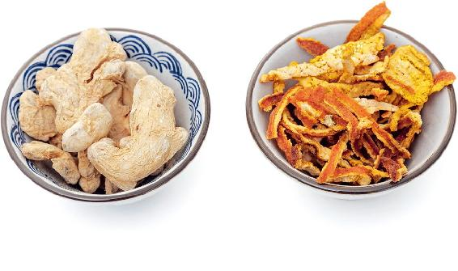
读者评论
- 我儿子感冒两天后开始咳嗽了，我观察他咳出的是白痰，感觉嗓子有点痒总想咳。我知道这是风寒引起的，用3个陈皮、9块去皮姜煮了一碗水。然后给孩子后背肺俞穴刮痧，再用姜片擦擦，拔了一个火罐，又喝了陈皮姜汤。刚喝完孩子就说有点热，5分钟后拔掉火罐，罐口是深紫色的。这一晚孩子睡得很安静，早晨起来只是偶尔咳一下。
——19群读者
- 这几天有点咳嗽，喉咙不痒不痛，就是胸口有一股气往上冲，心腹怕冷。试过鱼腥草茶、荠菜水都没见效，昨晚用茴香盐袋热敷胸口，今早咳出白痰，马上翻看陈老师的书，觉得符合陈皮姜汤，中午喝了两碗，下午感觉咳嗽有所减轻。
——周晓玲